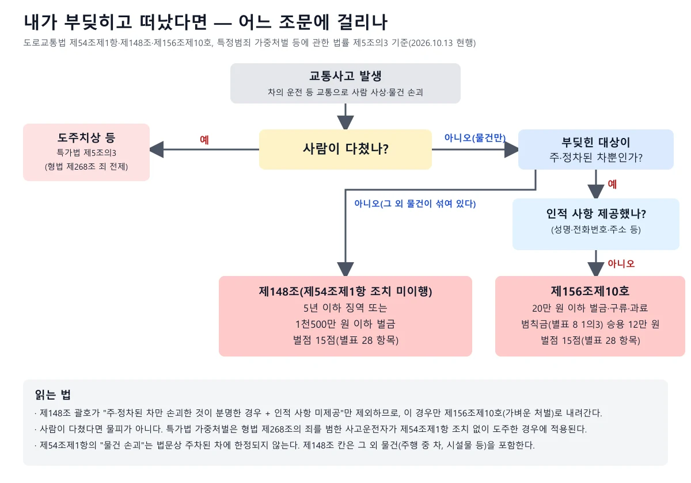
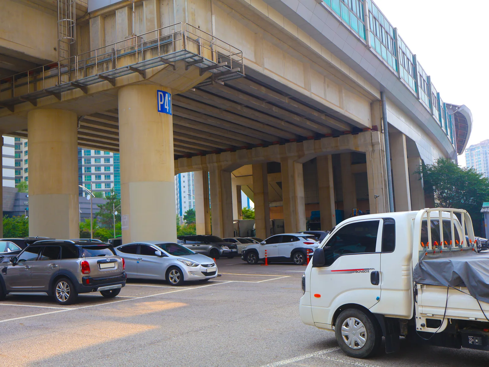
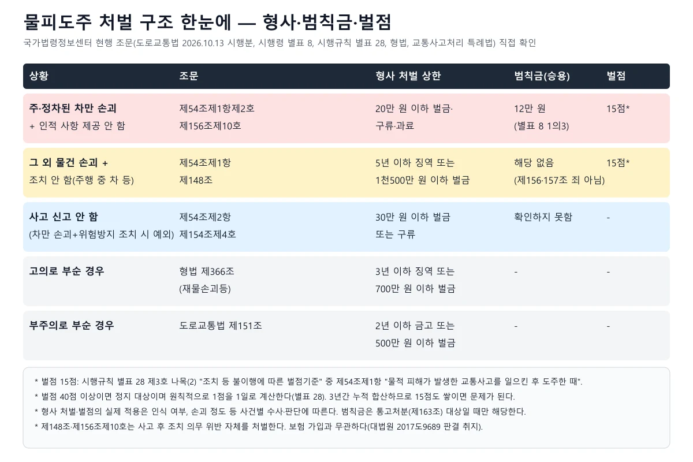
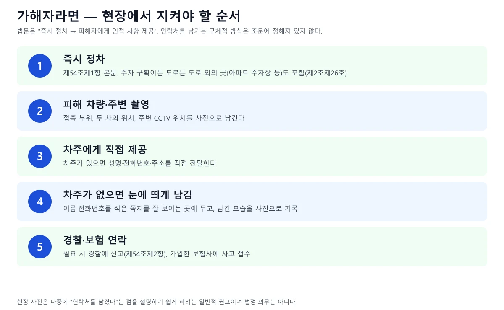
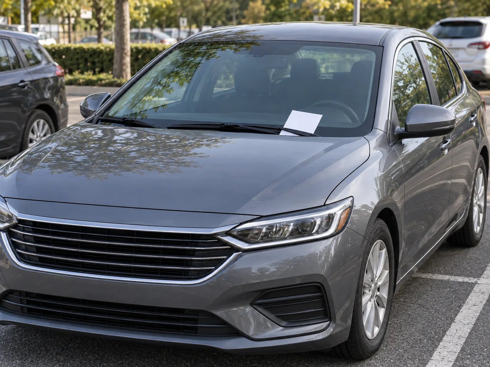
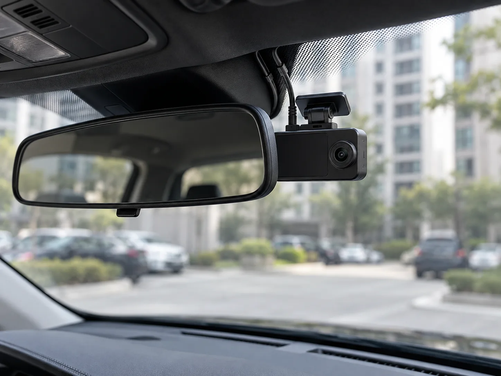
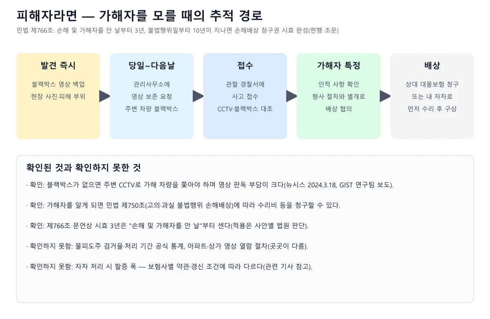
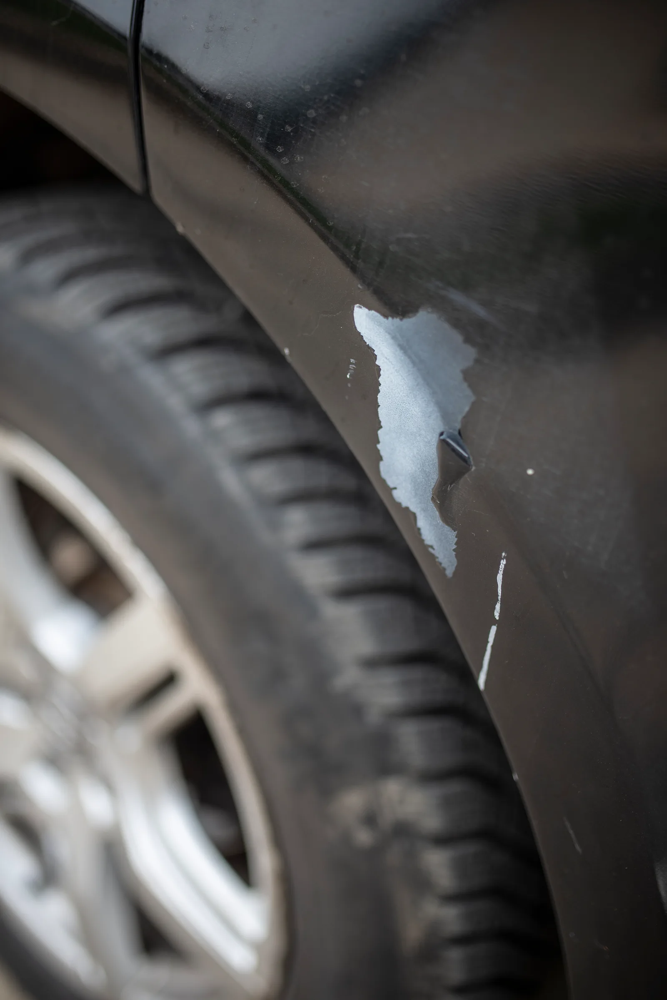
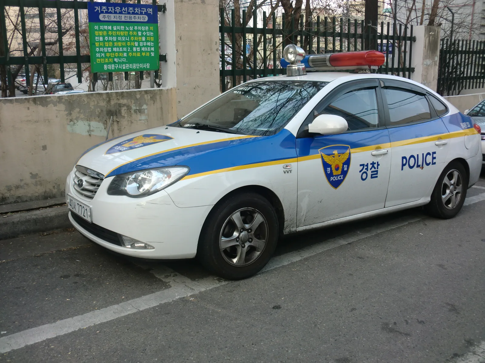

▲ 주차장 접촉으로 도어 하단에 긁힘이 생긴 상황을 가정한 AI 생성 이미지(실제 사고 사진이 아님). 사고 직후에는 피해 부위 사진과 주변 증거를 함께 남겨 두는 것이 중요하다 ⓒ 카프리즘 AI 생성 이미지(예시)
"주차장에서 옆 차를 살짝 긁었는데, 아무도 못 봤으면 그냥 가도 되나?" 결론부터 말하면 안 된다. 2026년 10월 13일 기준 국가법령정보센터 Open API로 도로교통법(2026.10.13 시행분)·시행령·시행규칙(별표 28, 행정안전부령 제636호 반영)과 형법·민법·교통사고처리 특례법·특정범죄 가중처벌 등에 관한 법률 현행 조문을 직접 내려받아 대조했고, 대법원 2017도9689 판결 원문도 열어 보았다. 이 글은 가해자가 떠났을 때 무슨 조문이 적용되는지와 피해자가 가해자를 모를 때 무엇을 해야 하는지를 한 번에 정리한다. 인명 피해 뺑소니의 초동 대응은 뺑소니 사고 초동 대응 기사에서, 보험 처리 손익은 주차장 긁힘 보험 vs 자비 수리 기사에서 다뤘다. 확인하지 못한 항목은 "확인하지 못했다"로 적었다.
1. 먼저 지도부터 — 사람이 다쳤나, 주차된 차뿐인가
"물피도주"는 법 조문의 이름이 아니라 사람들이 부르는 말이다. 법령은 사람이 다친 경우, 물건만 부순 경우, 주·정차된 차만 부순 경우를 서로 다른 조문으로 나눈다. 아래 도표가 현행 조문을 기준으로 그린 분기도다.

▲ 사람이 다쳤는지, 부딪힌 대상이 주·정차된 차뿐인지, 인적 사항을 제공했는지 세 질문으로 적용 조문이 갈린다 ⓒ 카프리즘 제작 도표(국가법령정보센터 현행 조문 기준)
| 상황 | 적용 조문 | 처벌 상한 |
|---|---|---|
| 사람이 다쳤는데 구호 없이 도주 | 특정범죄 가중처벌 등에 관한 법률 제5조의3제1항(형법 제268조 죄를 범한 사고운전자가 제54조제1항 조치 없이 도주) | 피해자 사망 시 무기 또는 5년 이상 징역 등 가중처벌(제1호). 세부 형량은 이 글 범위 밖 |
| 주행 중인 차·시설물 등을 부수고 조치 없이 떠남 | 도로교통법 제54조제1항, 제148조 | 5년 이하 징역 또는 1천500만 원 이하 벌금 |
| 주·정차된 차만 부수고 인적 사항 미제공 | 도로교통법 제54조제1항제2호, 제156조제10호 | 20만 원 이하 벌금·구류·과료(범칙금 통고 대상) |
| 사고 신고를 하지 않음 | 도로교통법 제54조제2항, 제154조제4호 | 30만 원 이하 벌금 또는 구류. 차만 손괴된 것이 분명하고 위험방지·소통 조치를 한 경우는 신고 예외 |
📍 "뺑소니"와 "물피도주"는 법이 다르다
특가법 제5조의3의 도주차량 가중처벌은 사람의 신체 피해(형법 제268조의 죄)를 전제로 한다. 빈 차만 긁고 떠난 사고는 이 조문의 대상이 아니라 도로교통법 제156조제10호나 제148조의 영역이다. 사람이 다쳤을 가능성이 조금이라도 있다면 얘기가 달라지므로, 현장을 떠나기 전에 반드시 확인해야 한다.
2. 제54조제1항을 풀어 읽기 — 연락처 남기기는 예의가 아니라 의무
조문의 핵심은 두 가지, "즉시 정차"와 "피해자에게 인적 사항 제공"이다. 제54조제1항은 "차 또는 노면전차의 운전 등 교통으로 인하여 사람을 사상하거나 물건을 손괴"한 경우 운전자등이 즉시 정차해 1호 사상자를 구호하는 등 필요한 조치, 2호 피해자에게 인적 사항(성명ㆍ전화번호ㆍ주소 등) 제공을 하도록 정한다. 법문은 인적 사항 제공이라고만 쓰고, 쪽지를 붙이라거나 사진을 찍으라는 방식은 정하지 않는다.

▲ 고가 아래 주차장 풍경. 주차장에서 일어난 접촉도 제54조제1항 의무가 그대로 적용된다(촬영 2024.7.13, 번호판은 판독되지 않는 크기) ⓒ LandAndTree / Wikimedia Commons, CC BY 4.0
아파트·마트 주차장은 도로가 아니니 괜찮다는 말은 틀렸다. 도로교통법 제2조제26호는 "운전"을 도로에서 차마를 본래의 사용방법에 따라 사용하는 것으로 정의하면서 제54조제1항·제148조·제148조의2 및 제156조제10호의 경우에는 도로 외의 곳을 포함한다고 적었다. 사고 후 조치 의무와 그 위반 처벌이 사유지 주차장에도 미친다는 뜻이다. 도로교통법 조문 바로가기
| 항 | 내용 | 위반 시 |
|---|---|---|
| 제1항 | 즉시 정차 후 ① 사상자 구호 등 필요한 조치 ② 피해자에게 인적 사항 제공 | 제148조 또는 주정차된 차만 손괴한 경우 제156조제10호 |
| 제2항 | 경찰공무원(현장) 또는 가장 가까운 국가경찰관서에 사고 장소·사상자 수·손괴 물건과 정도·그 밖의 조치를 지체 없이 신고. 차만 손괴된 것이 분명하고 도로의 위험방지·원활한 소통을 위한 조치를 한 경우 예외 | 제154조제4호(30만 원 이하 벌금 또는 구류) |
| 제3항 | 신고를 받은 경찰관이 필요하다고 인정하면 현장 도착 시까지 대기를 명할 수 있음 | - |
| 제4항 | 경찰공무원은 현장에서 부상자 구호와 교통안전에 필요한 지시를 명할 수 있음 | - |
눈여겨볼 대목은 제2항 예외다. 차만 부서졌고 도로 위험을 막는 조치를 했다면 경찰 신고는 필수가 아니다. 그러나 제1항 제2호의 인적 사항 제공에는 이런 예외가 없다. 경찰에 신고하지 않아도 되는 경미한 사고라도 피해 차주에게 연락처는 반드시 남겨야 한다는 구조다.
3. 처벌은 네 겹 — 형사 처벌, 범칙금, 벌점, 민사 배상
물피도주의 부담은 한 줄이 아니라 네 갈래로 나뉜다. 형사 처벌과 범칙금은 경찰·검찰 절차, 벌점은 면허 행정처분, 민사 배상은 피해자와의 책임이다. 아래 표가 조문 기준 상한과 항목을 정리한 것이다.

▲ 주차된 차만 손괴한 경우와 그 외 물건을 손괴한 경우는 형사 처벌 상한이 크게 다르다 ⓒ 카프리즘 제작 도표(국가법령정보센터 현행 조문 기준)
| 차종 | 범칙금 |
|---|---|
| 승합자동차등 | 13만 원 |
| 승용자동차등 | 12만 원 |
| 이륜자동차등 | 8만 원 |
| 자전거등 및 손수레등 | 6만 원 |
범칙금은 법 제162조가 정한 "범칙행위"(제156조·제157조의 죄에 해당하는 위반행위) 중 경찰서장이 통고처분하는 경우의 금액이다(제163조). 제148조 위반은 제156조·제157조의 죄가 아니므로 범칙금 통고 대상이 아니라 형사 절차로 간다. 한편 인터넷에는 "도로 외 장소(아파트 주차장 등)는 범칙금을 못 매기고 벌금(약식)으로 간다"는 설명도 있으나, 이를 뒷받침하는 공식 지침은 이번에 확인하지 못했다. 실제 처리 방식은 관할 경찰서 판단에 따른다.
벌점 15점이 면허에 미치는 영향
시행규칙 별표 28은 제3호 나목(2) "조치 등 불이행에 따른 벌점기준"에서 제54조제1항 · 교통사고 야기 시 조치 불이행 중 "물적 피해가 발생한 교통사고를 일으킨 후 도주한 때"에 15점을 둔다. 같은 표의 30점·60점 칸은 물피 사고가 아니라 사상자 구호 조치를 하지 않았다가 자진신고한 경우(3시간·12시간 이내 30점, 이후 48시간 이내 60점)에 관한 항목이다. 인터넷 글에는 다른 점수를 적은 것도 있어 별표 원문을 기준으로 했다. 다만 도로교통법 제2조제26호가 "운전"의 범위를 도로 외의 곳까지 넓힌 조문은 제54조제1항·제148조·제156조제10호 등이고 면허 행정처분(제93조)은 열거돼 있지 않아, 도로가 아닌 아파트·마트 주차장 사고에 벌점이 실제로 부과되는지를 직접 밝힌 공식 기준은 확인하지 못했다. 15점은 별표 28의 배점이며 적용 여부는 사안별로 달라질 수 있다. 시행규칙 별표 28 바로가기
| 기존 누적 벌점 | 이 사고 벌점 | 합계 | 의미 |
|---|---|---|---|
| 0점 | 15점 | 15점 | 정지 기준(40점) 미만. 처분벌점이 40점 미만이면 최종 위반일로부터 1년간 위반·사고가 없을 때 소멸 |
| 25점(예: 신호위반 등) | 15점 | 40점 | 정지 기준 도달. 원칙적으로 1점을 1일로 계산해 40일 정지 대상이 될 수 있음 |
| 30점 | 15점 | 45점 | 정지 대상. 구체 집행일수는 감경·공제 여부에 따라 달라짐 |
주차 중 차량 관리·발렛 같은 다른 주차장 분쟁은 발렛·세차 중 파손 책임 기사에서 다뤘다. 벌점의 일반 개념은 벌점 40점 면허정지 기사에서 다뤘다. 부과된 처분에 다툴 사유가 있다면 과태료 이의신청 기사도 참고할 수 있지만, 범칙금·형사 절차와 과태료 절차는 다르다는 점은 유의해야 한다.
📍 고의로 부쉈다면 형법이 따로 적용
형법 제366조는 타인의 재물을 손괴 또는 은닉하거나 그 밖의 방법으로 효용을 해한 사람을 3년 이하의 징역 또는 700만 원 이하의 벌금에 처한다. 부주의로 부순 경우는 도로교통법 제151조가 "업무상 필요한 주의를 게을리하거나 중대한 과실로 다른 사람의 건조물이나 그 밖의 재물을 손괴"한 운전자를 2년 이하의 금고 또는 500만 원 이하의 벌금에 처한다고 정한다. 사고 후 미조치 처벌(제148조 등)과는 별개 범죄다.
4. 대법원 2017도9689 — "사고를 몰랐다"가 통하는 때와 아닌 때
제54조제1항 위반은 과실범이 아니라 고의범이다. 대법원은 2017년 9월 7일 선고한 2017도9689 판결에서 "제148조에 의하여 처벌되는 제54조제1항 위반죄는 사람의 사상, 물건의 손괴가 있다는 것에 대한 인식이 있을 것을 필요로 하는 고의범으로서, 과실범인 제151조의 죄와는 그 보호법익, 주체, 행위 등 구성요건이 전혀 다른 별개의 범죄"라고 판시했다. 이 사건 피고인은 도로 우측에 주차된 차량 3대를 손괴하는 사고를 낸 혐의를 받았고, 원심이 "사고 후 미조치의 범의가 있다고 보기 어렵다"고 본 판단을 대법원은 정당하다고 보았다. 대법원은 이 판결에서 원심이 공소기각한 부분을 죄수 관계 법리 오해로 파기하고, 검사의 항소를 기각해 무죄를 유지했다. 다만 현행 제148조는 "주·정차된 차만 손괴한 것이 분명한 경우의 인적 사항 미제공"을 제외하므로, 판결이 다룬 사안의 사고 시점이 개정 전후 어느 쪽인지는 판결문만으로 확인하지 못했고 오늘 기준으로는 제156조제10호로 갈릴 수 있다. 판결 원문 바로가기
| 쟁점 | 판결문 내용 |
|---|---|
| 성립 요건 | 손괴가 있다는 것에 대한 인식 필요(고의범). 조치를 취할 필요성이 인정되지 않으면 무죄 선고 대상 |
| 제151조와의 관계 | 과실 재물손괴(제151조)와 사고 후 미조치(제148조)는 실체적 경합범으로 따로 성립 |
| 종합보험의 영향 | 제151조 죄는 교통사고처리 특례법 제4조제1항 본문, 제3조제2항 본문에 따라 보험 가입 시 공소를 제기할 수 없다고 판결문이 서술. 제148조 죄는 별개이므로 그 적용을 받지 않는다는 취지 |
여기서 두 가지를 조심해서 읽어야 한다. 첫째, "몰랐다"는 말만으로 면책되지는 않는다. 사고 규모, 충격 정도, 현장 상황으로 인식 여부를 판단하며, 이 판결도 원심이 인정한 사실관계를 전제로 한다. 둘째, 보험이 있어도 사고 후 조치 의무 위반은 따로 처벌될 수 있다는 점이다. 교통사고처리 특례법 제4조는 보험 가입 시 제3조제2항 본문의 죄(업무상과실치상·중과실치상 및 도로교통법 제151조)에 대한 공소 제기를 제한할 뿐이며, 보험 계약이 무효이거나 면책 규정으로 지급 의무가 없는 경우 등은 예외로 둔다. 교통사고처리 특례법 바로가기
5. 내가 가해자일 때 — 현장 순서와 연락처 남기는 법
현장을 떠나기 전 3분이 이후 모든 부담을 바꾼다. 아래는 제54조제1항의 문언을 현장 행동으로 옮긴 순서다. 쪽지의 형식 요건은 법에 없으므로, 아래 방식은 "나중에 남겼다는 사실을 설명하기 쉽게 하는 일반적 권고"로 이해하면 된다.

▲ 법문은 즉시 정차와 인적 사항 제공이며 쪽지·사진은 이를 입증하기 쉽게 하는 권고다 ⓒ 카프리즘 제작 도식(제54조 조문 기준)
✅ 주차장에서 옆 차를 건드렸을 때 체크리스트
· 1단계, 일단 내려서 확인: 접촉 부위를 눈으로 본다. 사람이 다친 흔적이 없는지, 안에 사람이 있었는지도 확인한다
· 2단계, 사진 3종: 접촉 부위 근접, 두 차의 위치 관계, 차 번호 대신 주차 구획·기둥 번호 같은 주변 표지
· 3단계, 차주 찾기: 차량 앞유리에 적힌 연락처나 관리사무소 방송을 활용해 직접 전달한다
· 4단계, 쪽지: 이름·전화번호를 적어 운전석 와이퍼 아래 등 눈에 띄는 곳에 두고, 남긴 모습을 사진으로 남긴다
· 5단계, 내 블랙박스 영상 보존: 내 차 영상이 덮어쓰기 되기 전에 백업한다. 제출 요령은 블랙박스 영상 제출 기사를 참고한다
· 6단계, 보험사 문의: 가입한 보험사에 사고 접수와 대물 처리 절차를 확인한다(손익은 주차장 긁힘 기사 참고)

▲ 차주가 바로 볼 수 있는 앞유리 와이퍼 아래에 쪽지를 두는 상황을 가정한 AI 생성 이미지(예시). 쪽지 서식은 법에 정해져 있지 않다 ⓒ 카프리즘 AI 생성 이미지(예시)

▲ 앞유리에 부착된 블랙박스를 가정한 AI 생성 이미지(특정 제품·실제 장소 아님). 주차 중 충격 감지 영상이나 접촉 직후의 영상이 남아 있다면 덮어쓰기 전에 백업해 두는 것이 안전하다 ⓒ 카프리즘 AI 생성 이미지(예시)
6. 내가 피해자일 때 — 가해자를 모르는 상태에서 할 일
피해자가 이길 확률을 가르는 것은 사고 직후의 증거다. 가해자가 쪽지도 없이 떠났다면, 우선 영상부터 확보하고 경찰에 사고를 접수해 CCTV·블랙박스 대조 절차를 밟는 것이 일반적이다. 뉴시스 2024년 3월 18일 보도(GIST 이용구 교수팀 연구)는 블랙박스가 없으면 주변 CCTV로 가해 차량을 쫓아야 하는데 방대한 영상을 사람이 직접 판독해야 해 부담이 크다고 전했다.

▲ 발견 즉시 영상을 백업하고, 관리사무소 영상 보존 요청과 경찰 접수를 병행하는 순서로 정리했다 ⓒ 카프리즘 제작 도식
| 단계 | 행동 | 근거·확인 범위 |
|---|---|---|
| ① 발견 즉시 | 피해 부위와 주차 위치 사진, 내 블랙박스 주차 녹화 영상 백업 | 일반적 권고. 영상 덮어쓰기 위험은 기기별로 다름 |
| ② 영상 보존 요청 | 관리사무소·건물 관리처에 CCTV 보존 요청 | 열람·제공 절차는 곳곳이 달라 확인하지 못했다 |
| ③ 경찰 접수 | 관할 경찰서·지구대에 사고 접수 후 영상 제출 | 가해자의 인적 사항 제공·신고 의무는 제54조. 제출 요령은 별도 기사 참고 |
| ④ 가해자 특정 후 | 수리비 등 배상 협의, 필요 시 대물보험·소송 | 민법 제750조(불법행위 손해배상 책임) |
| ⑤ 시효 관리 | 손해 및 가해자를 안 날부터 3년, 불법행위일부터 10년 이내 청구 | 민법 제766조 |
가해자를 끝내 찾지 못하면 자차 보험으로 먼저 수리하는 길이 있다. 가해자 불명 사고를 자차로 처리하는 조건과 수리비 손익분기점은 주차장 긁힘 기사에서, 사람이 다친 뺑소니 피해 구제는 뺑소니 초동 대응 기사에서 다뤘다. 과실 비율이 문제가 되는 사고라면 사고 과실비율 기사도 함께 보면 된다. 민법 조문 바로가기

▲ 펜더에 페인트가 벗겨진 접촉 흠집 예시(촬영 장소 정보 없음). 피해 직후에는 흠집 근접 사진과 주차 위치 전체 사진을 함께 남겨 둔다 ⓒ Shixart1985 / Wikimedia Commons, CC BY 2.0
7. 이미 현장을 떠났다면 — 자진신고, 경찰 조사에서 알아둘 것
법문에는 "떠났다가 돌아오면 처벌이 없다"는 규정이 없다. 제148조와 제156조제10호는 조치를 하지 않은 행위를 처벌 대상으로 정할 뿐 자진신고 감면 요건을 따로 적지 않는다. 별표 28의 30점·60점 자진신고 칸은 앞서 본 대로 사상자 구호 조치 불이행에 대한 것이며 물피 15점에는 적용되지 않는다. 자진신고가 형사 처분이나 양형에서 어떻게 고려되는지는 공식 기준을 확인하지 못했다. 변호사 상담이나 경찰 안내를 통해 사안별로 확인해야 한다.

▲ 동대문경찰서 순찰차. 사고 신고는 현장 경찰 또는 가장 가까운 국가경찰관서에 하도록 제54조제2항이 정한다 ⓒ hyolee2 / Wikimedia Commons, CC BY-SA 3.0
| 상황 | 법령상 읽히는 결론 | 유의점 |
|---|---|---|
| 쪽지를 남겼는데 바람에 날아갔다 | 조문은 "인적 사항 제공"만 요구. 제공 사실의 입증이 문제 | 쪽지를 붙인 모습의 사진·영상이 있으면 설명에 도움. 처벌 여부는 개별 판단 |
| 부딪힌 줄 몰랐다 | 제148조는 인식이 필요한 고의범(대법원 2017도9689) | 충격·소리·피해 규모에 따라 인식 여부가 다르게 평가될 수 있음 |
| 사람이 없는 빈 차였다 | 제54조제1항제2호의 인적 사항 제공 의무는 그대로 | 제2항 신고는 차만 손괴·위험방지 조치 시 예외 |
| 보험 처리하면 문제없나 | 보험은 배상 문제, 조치 의무 위반은 별개 | 제148조·제156조제10호 위반 자체는 그대로 성립할 수 있음 |
| 고의로 부쉈다 | 형법 제366조 재물손괴 적용 가능 | 고의 입증 여부는 수사·재판 판단 |
8. 자주 묻는 질문
| 질문 | 확인된 내용 |
|---|---|
| 주차장도 처벌되나? | 그렇다. 제2조제26호가 제54조제1항·제148조·제156조제10호에서는 도로 외의 곳도 "운전"에 포함한다고 명시 |
| 12만 원만 내면 끝인가? | 범칙금(별표 8 제1의3호 승용 12만 원)은 통고처분 대상일 때의 금액. 벌점·민사 배상은 별개이고, 처리 방식은 관할 경찰 판단에 따름 |
| 경찰 신고가 필수인가? | 차만 손괴된 것이 분명하고 위험방지·소통 조치를 했다면 제2항 신고는 예외. 그러나 인적 사항 제공은 예외 없음 |
| 벌점은 몇 점인가? | 별표 28: 물적 피해 교통사고 후 도주 시 15점 |
| 피해자는 언제까지 청구하나? | 민법 제766조: 손해 및 가해자를 안 날부터 3년, 불법행위일부터 10년 |
| 사람이 다쳤으면? | 특가법 제5조의3 도주차량 가중처벌 가능. 이 글의 물피 기준이 적용되지 않음 |
| 검거 확률·처리 기간은? | 공식 통계는 확인하지 못했다 |
9. 요약
주차장이든 도로든, 사람이 없는 빈 차를 건드려도 연락처를 남겨야 한다. 도로교통법 제54조제1항제2호는 인적 사항 제공을 요구하고, 주·정차된 차만 손괴한 경우 미제공은 제156조제10호(20만 원 이하 벌금·구류·과료, 범칙금 승용 12만 원)로, 그 밖의 물건·주행 중 차 등은 제148조(5년 이하 징역 또는 1천500만 원 이하 벌금)로 처벌된다. 벌점은 별표 28에 15점이다.
피해자는 영상부터 확보하고 경찰에 접수한다. 가해자를 알게 되면 민법 제750조로 배상을 청구하고, 시효는 손해 및 가해자를 안 날부터 3년이다. 자진신고의 구체적 효과, 영상 열람 절차, 검거 통계는 공식 자료를 확인하지 못했으므로 단정하지 않았다.